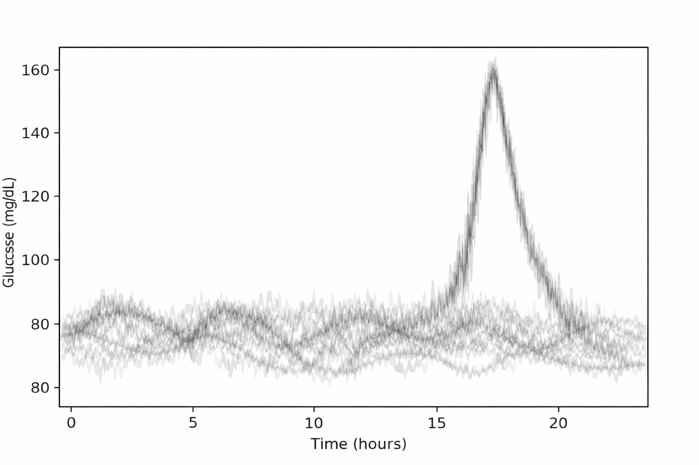
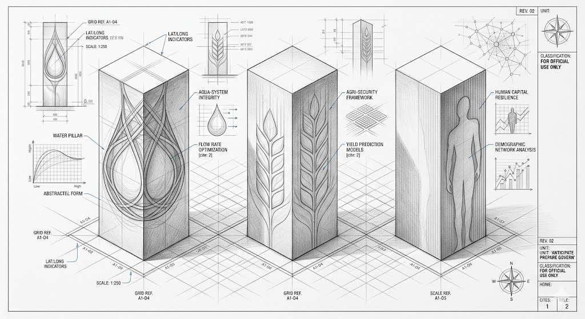

Evidence-Bound Method
Every strategic deliverable is constrained by documented methodology and governance thresholds to ensure all outputs are auditable and insulated from bias.
Operational Readiness for Critical Systems
Delivering operational decision support for ministries, agencies, and operators managing systemic risk across critical water, food, and supply networks.
Convert uncertainty into preparation pathways.
From diffuse risk to governable action.
Automated horizon scanning continuously monitors global data nodes across food, water, and supply systems.
The objective is early identification of anomalies that may compound into systemic pressure.
Signals are treated as indicators of exposure, not as headlines.
Monitoring focuses on structural indicators that precede disruption: flow constraints, pricing pressure, routing shifts, and operational frictions.
Coverage is continuous; escalation is gated.
Anomaly detection flags deviation from baseline patterns before downstream effects become visible.
This reduces interpretation delay and preserves maneuver time.
Initial triage classifies signals by domain relevance, exposure pathways, and potential threshold proximity.
Only qualified signals proceed to modeling.
Diffuse signals are translated into structured vulnerabilities and decision trade-offs.
Accountability is retained by human analysts; computation augments scale and detection.
Action is governed, documented, and aligned to the client's operational authority.
GiNOVA · Institutional Boundaries
Engagement governed by defined methodological boundaries to ensure systemic integrity.
Every strategic deliverable is constrained by documented methodology and governance thresholds to ensure all outputs are auditable and insulated from bias.
All engagement must clear a multi-gate Pipeline Intake process to ensure operational feasibility and strict adherence to stabilization protocols.
GiNOVA operates strictly outside the spheres of advocacy and lobbying to preserve the absolute neutrality required for high-stakes decision support.
We reject "prediction theater" in favor of deterministic preparation pathways, ensuring readiness regardless of the specific crisis trigger.

Conventional risk models treat systemic capacity as a fixed value. Complex infrastructure does not operate on fixed values—it operates on cascading signals. Under identical stress inputs, systemic resilience diverges.
Conventional models discard this variance as noise. In operational risk, it encodes state: latency, supply phase, infrastructural friction, and cascading exposure.
A system can fail even if physical supply appears stable.
GiNOVA engineers operational frameworks for systemic continuity—governing pressure states, response timing, and infrastructural persistence.
THE DELIVERABLES
We terminate uncertainty by delivering exact continuity protocols across three structural time horizons: Near-Term, Mid-Horizon, and Structural. Our deliverables are engineered for executive usability, stripping away academic bloat to provide immediate operational clarity.

GINOVA · PREPARE
Strategic programs that translate systemic risk and threshold monitoring into decision-grade literacy and institutional capability.
High-density modules for leadership teams covering systemic control architectures, population resilience, and operational posture under constraint.
Advanced workshops that operationalize systemic signal integrity, timing, and state-dependent response through applied protocol design.
For institutional partnerships and invited strategic briefings—reach out with a decision brief and your preferred timeline.
info@ginova.org
SCOPE
Anticipate · Prepare · Govern